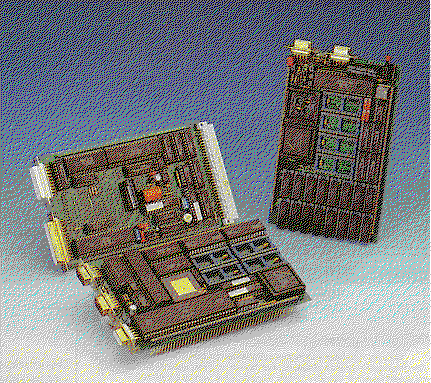

Previous
Next
TOC

Auf der Aluminium Frontplatte des Rechnermoduls, sind sämtliche An-
schlüsse des ST herausgeführt. Dabei werden für Monitor, R5232-
Schnittstelle, Tastatur und die Midi-Anschlüsse 9-polige Sub-Minia-
tur-D-Buchsen bzw. Stecker verwendet. Das ist zwar nicht unbedingt
Normkonform (Midi) aber es hat den Vorteil, das es auch unsanfter
Behandlung widersteht. Für Farb- und Monochrom-Bildschirm werden un-
terschiedliche Anschlüsse verwendet. Auch der Resetknopf steht auf
der Frontplatte zur Verfügung. Floppy-Laufwerke und die Festplatte(n)
können direkt auf der Platine angeschlossen werden.
Die Tastatur des Gesamt-Systems stammt vom Mega ST. Der Monitor war
ein SM 124 mit modifiziertem Kabel. Die Hardware des IBP 190 ST ent-
spricht bis auf einige Erweiterungen der eines Mega ST, mit der aus-
nahme das der Speicher im Grundgerät nur 512 Kilobyte groß ist und
auch nur auf 2 Megabyte aufgerüstet werden kann und der Blitter nach-
gerüstet werden muß(te). Für einen arithmetischen Coprozessor ist
an einen Sockel jedoch gedacht worden. Der ATARI-Romport ist in der
Grundausstattung nicht vorhanden. Dafür sind auf der Platine aber
Sockel für bis zu 128 KByte Eprom oder akkugepuffertes (!) SRAM vor-
handen, die den normalen Adressraum des ROM-Ports belegen. Mit einer
externen Erweiterung können aber auch normale Romport-Module ange-
schlossen werden. Der Audio-Ausgang des 190 ST kann etwas mehr Krach
machen als ein normaler ST: Ein 1 -Watt-Verstärker sorgt für dement-
sprechende Leistung. Zu guter letzt kann man die Übertragungsrate des
Midi-Interfaces bis auf 126 KBaud erhöhen, was vor allem für die Ver-
netzung mehrerer Rechner interessant sein dürfte. Schließlich ist im
Rechnereinschub eine etwas ausgefeiltere RESET-Logik eingebaut, als
man sie vom normalen ST kennt. Wenn die Spannung der Stromversorgung
unter 4.75 Volt sinkt, erzeugt der Rechner automatisch einen Reset.
Beim Einsatz einer Harddisk ist es möglich, die Power-up-Reset-Phase
um 15 Sekunden zu verlängern, so daß Harddisk und Rechner über einen
gemeinsamen Schalter ein- und ausgeschaltet werden können. Schließ-
lich gibt es eine Watchdog-Logik, die per Software aktiviert werden
kann.
weiterblättern
Kapitel Der IBP 190 ST, der 19 Zoll Atari, Seite 2